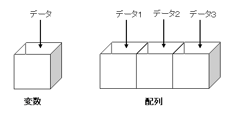
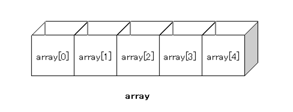
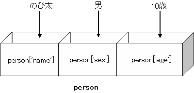
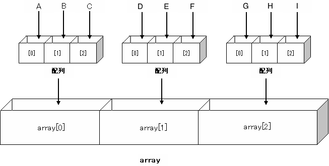

JavaScript入門¶
Hello, World!¶
<script type="text/javascript"> <!-- document.write("Hello, World!"); // --> </script>
外部JavaScriptファイル(.js)¶
document.write("It Works!!");
<script type="text/javascript" src="sample.js"></script>
コメント¶
コードを記述する中で、「何の処理なのかメモしたい」とか「他の人が見たときに分かり易いようにコメントを書こう」ということがよくあります。 JavaScript中にコメントを記述するには、コメントにしたい文章の頭に「//」を書きます。
//ここは表示されません。
alert("Hello World"); //ハローワールド
/*
ここの領域は
コメントとして
扱われ
無視されます
*/
行末¶
document.write("Hello World!!");
document.write("Hello World!!")document.write("Hello Japan!!");
関数¶
document.write(x);
alert(x); // xに入れた値をアラートウィンドウで表示する
print(); // 印刷を実行する
scroll(x, y); // 座標x,yの位置まで画面をスクロールする
データ型¶
文字列型
JavaScriptに『文字列(String)』を記述する場合、文字列全体を『”(ダブルクオート)』あるいは「’(シングルクオート)」で括ります。document.write("Hello World!!");はwrite関数に「Hello World」という文字列を渡したいから「”」で括られていたことがわかりますね。document.write('Hello World!!');でも同じ挙動になります。ひとつ注意しなければならないのが、文字列の中でシングルクオートやダブルクオートを使いたい場合です。document.write("<a href="index.html">リンクだよ</a>");と書きたくなりますが、”“の間が文字列と認識されるので、「<a href=」と「>リンクだよ</a>」という2つの文字列、そして間のindex.htmlというナニかである、と解釈されてしまいます。後述のエスケープシーケンスを使うか、或いはdocument.write("<a href='index.html'>リンクだよ</a>"); document.write('<a href="index.html">リンクだよ</a>');のように、ダブル(シングル)クオート中でシングル(ダブル)クオートを使うことで回避できます。
数値型
JavaScriptに『数値』を記述する場合は括る必要性はありません。var a = 5; var b = 3;
論理型
論理型はtrue,もしくはfalseであらわされる2項の型です。これも括る必要性はありません。var flag_a = true; var flag_b = false;
ヌル型
nullは有効な値が存在しないということを表すための値です。これも括る必要性はありません。var num = null;
デバッガの使い方¶
- Google Chrome、IEの場合
- F12キーでデバッガを立ち上げることができます。
- FireFoxの場合
- FireFoxにはFirebugというアドオンがあります。下記のURLから入手できます。https://addons.mozilla.org/ja/firefox/addon/1843/ これを使うと、構文のエラー等、エラーの内容を表示してくれます。
変数¶
var text = "Hello, World!";
document.write(text);
Hello, World!
演算子¶
これらの数値は、演算子を使うことで計算することが出来ます。
| 演算子 | 説明 |
|---|---|
| + | 加算 |
| - | 減算 |
| = | 乗算 |
| / | 除算 |
| % | 剰余(割ったあまりを返す) |
これとは別に、定型的な演算子もあります。
| 演算子 | 説明 |
|---|---|
| ++ | インクリメント(整数型の値に1を足す) |
| - - | デクリメント(整数型の値から1を引く) |
注：表記上見難いですが、デクリメントはマイナス2つ連続して表記します。
++a;
a++;
var a = 0;
document.write(++a);
var a = 0;
document.write(a++);
document.write(a++);
document.write(a);
var b = 0;
document.write(++b);
document.write(++b);
document.write(b);
条件分岐¶
if文
if文は以下のように記述します。
if (条件) {
処理A;
} else {
処理B;
}
条件に合致した場合は処理Aを、合致しなかった場合は処理Bを実行します。else節以降を外して、
if (条件) {
処理A;
}
var a = 10; // 変数aを定義し、10を代入 if ( a % 2 == 0 ) { // もし変数iを2で割った余りが0であれば、以下の処理を実行 alert("偶数"); // アラートで「偶数」と表示 } else { // 上記条件に当てはまらなければ、以下の処理を実行 alert("奇数"); // アラートで「奇数」と表示 }
この条件式の中に含まれている==ですが、これは等しいことを表す演算子です。左右の値が同じであれば、条件に合致したと見なされます。 この場合、条件式が真であるといいます。
比較演算子
これらの演算子は比較演算子と呼ばれ、以下のようなものがあります。
| 符号 | 説明 |
|---|---|
| == | 等しい |
| != | 異なる |
| < | 小なり |
| > | 大なり |
| <= | 以下 |
| >= | 以上 |
論理演算子
さらに複雑な条件式を組むために、論理演算子が使用できます。
| && | AND |
| || | OR |
例えば、aが偶数かつ100より大きい、という条件を作る場合は、
a % 2 == 0 && a > 100
と書くことが出来ます。
elseif文
if文をさらに高度にさせた文に、elseif文があります。if文のelseの場合、さらに条件分岐をさせるものです。
if (条件式A) {
処理A;
} else if (条件式B) {
処理B;
} else {
処理C;
}
条件式Aが真の場合は処理A、条件式Aが偽の場合で条件式Bが真の場合はB、どちらも偽の場合はCが実行されます。else ifをたくさんつなげて、より高度な処理を行なうことも可能です。
インデント・字下げ¶
if(a== b){document.write("aとbは等しい"); } else {document.write("aとbは等しくない"); }
if (a == b) {
document.write("aとbは等しい");
} else {
document.write("aとbは等しくない");
}
switch文¶
var science = 'chemistry'; // 変数scienceを定義し、chemistryという文字列を代入 switch (science) { case 'physics': // 変数scienceの値がphysicsであれば以下の処理を実行 document.write("私は物理が好きです。"); // 「私は物理が好きです。」と表示する break; // switch文を終了 case 'biology': // 変数schienceの値がbiologyであれば以下の処理を実行 document.write("私は生物が好きです。"); // 「私は生物が好きです。」と表示する break; // switch文を終了 case 'chemistry': // 変数schienceの値がchemistryであれば以下の処理を実行 document.write("私は化学が好きです。"); // 「私は化学が好きです。」と表示する break; // switch文を終了 default: // 変数scienceの値がphysicsでもbiologyでもchemistryでもない場合、以下の処理を実行 document.write("私は理科が好きです。"); // 「私は理科が好きです。」と表示する break; // switch文を終了 }
繰り返し文¶
while文¶
while (条件式) { 処理; }
var i = 0; // 変数iを定義して0を代入 while (i < 100) { // 変数iが100未満であれば処理を実行、100より大きければ処理を実行せずループを終了 document.write("ありがとう"); // 「ありがとう」と表示する i++; // 変数iに1を加算する } // 条件式へ戻る
while (1 == 1) { document.write("ありがとう"); }
var i = 0; // 変数iを定義して0を代入 while (1 == 1) { // 1 == 1 は真となるので必ず処理を実行 document.write("ありがとう"); // 「ありがとう」と表示する i++; // 変数iに1を追加する if (i > 100) { // もし変数iが100より大きければ以下の処理を実行 break; // ループを終了 } } // 条件式へ戻る
for文¶
for(初期化式; 継続条件式; 再初期化式){ 処理; }
// 変数iを定義し0を代入 ※ループの初回のみ実行される for (var i = 0; i < 100; i++) { // 変数iが100未満だったら以下の処理を実行、変数iが100より大きければ処理を実行せずにループを終了 document.write("ありがとう"); // 「ありがとう」と表示する } // 変数iに1を加算し、継続条件式へ再び「i < 100」が真となるか判断する。
ネスト¶
for (var i = 0; i < 100; i++) { for (var j = 1; j <= 100; j++) { document.write(j); } }
課題4¶
for (var i = 1; i <= 9; i++) {
for (var j = 1; j <= 9; j++) {
}
}
ノート
配列¶

配列の定義法¶
var array = new Array(5);

array[1] = 5;
document.write(array[1]);
配列の中身を設定する¶
配列の値を設定する方法には
var array = new Array(5); array[0] = 'a'; array[1] = 'b'; array[2] = 'c'; array[3] = 'd'; array[4] = 'e';
var array = new Array('a', 'b', 'c', 'd', 'e');
配列の長さを取得する¶
配列名.length;
var programming = new Array('プ', 'ロ', 'グ', 'ラ', 'ミ', 'ン', 'グ'); // 変数aを定義して配列を代入 for (var i = 0; i < programming.length; i++) { // 変数iの値が配列aの要素数「7」未満であれば処理を実行 document.write(programming[i]); // 配列の「変数i」番目の値を表示（変数iが3であればdocument.write(programming[3]);となる） }
プログラミング
連想配列¶
var person = new Array(3); person["name"] = "のび太"; person["sex"] = "男"; person["age"] = "10歳";
二次元配列¶
var array = new Array(3); // 変数arrayを作成し配列を代入 array[0] = new Array('A', 'B', ’C'); // 配列arrayの1番目の要素に配列を代入 array[1] = new Array('D', 'E', ’F'); // 配列arrayの2番目の要素に配列を代入 array[2] = new Array('G', 'H', ’I'); // 配列arrayの3番目の要素に配列を代入
document.write(array[0][2]); document.write(array[1][1]); document.write(array[2][0]);
CEG
関数の作成¶
関数を定義する¶
関数の見本¶
function quadratic(number) // 関数名、引数を指定して関数定義の宣言 { answer = number * number; // 変数answerに「引数number×引数number」の結果を代入 return answer; // 変数answerを返す } // 実行してみる var a = 4; // 変数aを定義し、4を代入 var b = quadratic(a); // 変数bを定義し、引数に変数aを渡して関数quadraticを実行した結果を代入 alert(b); // 変数bの値をアラートで表示
function hello(name) { answer = "こんにちは、" + name + "さん。"; return answer; }
"こんにちは、太郎さん。"
値の取得¶
オブジェクトの利用¶
オブジェクト名：document メソッド名：write 引数：文字列
var pi = Math.PI; document.write(pi);
var hello = new String("Hello,World!"); //または var hello = "Hello,World!"; document.write(hello.length);
var lastName = "Suzuki"; var firstName = "Ichiro"; var text = lastName.substr(2,4); // 3文字目から文字を4つ抜き取る document.write(text); // zuki var Omoji = lastName.toUpperCase(); //文字列を大文字にする document.write(Omoji); // SUZUKI var fullName = lastName.concat(firstName); //文字列を結合する document.write(fullName); // SuzukiIchiro
JavaScript最終課題¶
今月から半年分のカレンダーを、JavaScriptを使って作成してください。いままで習ったことをフル活用してください。その際、
- 配列を使うこと
- Dateオブジェクトを使うこと
- まとまった処理は関数を使うこと
を守るようにしてください。もちろん直接カレンダーを表示するのは禁止です。
ヒント¶
関数を作るときは、以下の関数を作ってみて、それぞれで値や配列を渡してみましょう。
- 今日の日付を取得して、半年後までの年と月を取得し、配列で返す関数
- 年と月を渡すと、月の日数と最初の曜日を返す関数
- 月の日数と最初の曜日を渡すと、テーブルにしてくれる関数
参考サイト JavaScript による日付・時刻・時間の計算・演算のまとめ
JS Bin